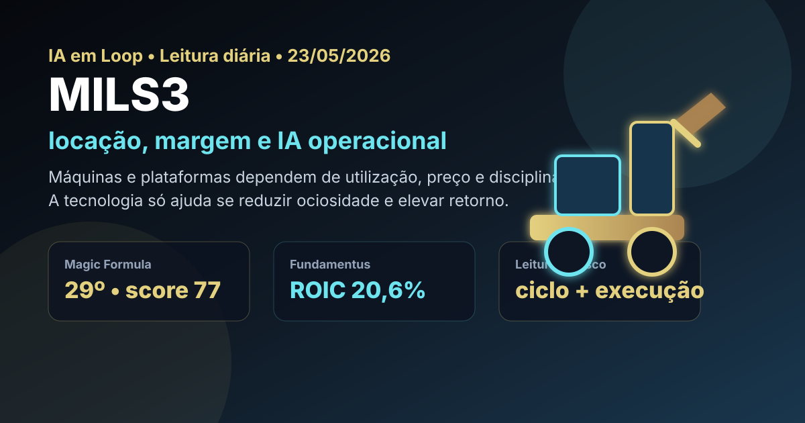

23/05: MILS3, locação de equipamentos e IA no teste da utilização
A leitura diária sai de tecnologia, seguros e educação e entra em um negócio menos glamouroso, mas essencial para infraestrutura, indústria e serviços: locação de máquinas, plataformas e equipamentos. MILS3 aparece no Top 30 da Magic Formula com retorno alto e múltiplos ainda comportados. A pergunta é se a companhia consegue transformar frota, dados e disciplina comercial em utilização, margem e caixa recorrente.

Leitura visual: em locação de equipamentos, tecnologia não vale pelo discurso; vale se melhora utilização, manutenção, preço, cobrança e retorno sobre a frota.
O sinal do dia
MILS3 entra no radar porque combina três elementos que merecem estudo: negócio ligado à economia real, retorno sobre capital relevante e preço ainda sem aparência de euforia. No ranking Magic Formula de maio do IA em Loop, Mills aparece em 29º lugar, setor Máquinas/Equipamentos, com ROIC de 18,59%, earnings yield de 12,74% e score 77. Não é o topo do ranking, mas é um candidato útil para diversificar a sequência de estudos para além de seguros, petróleo, construção, educação e tecnologia pura.
Na consulta ao Fundamentus feita hoje, a fotografia de MILS3 mostrava cotação de R$ 13,10, P/L de 7,13, P/VP de 1,73, dividend yield de 8,1%, P/EBIT de 4,40, margem EBIT de 36,9%, margem líquida de 22,8%, ROIC de 20,6%, ROE de 24,2%, volume médio de R$ 13,0 milhões em dois meses e balanço processado de 31/03/2026.
Resposta curta: MILS3 parece uma tese de qualidade cíclica com preço razoável. A leitura é positiva para estudo, mas não automática: a empresa depende de utilização da frota, ciclo de investimento, disciplina de capex e inadimplência dos clientes. O ponto decisivo é se crescimento, dividendos e margens continuam andando juntos sem exigir alavancagem excessiva.
Por que MILS3 hoje?
O noticiário público recente reforça que a empresa não está parada. Leituras de mercado sobre o 1T26 destacaram alta de receita, avanço de Ebitda, lucro líquido reportado de R$ 197 milhões no trimestre e maior rentabilidade. Também houve atualização de dividendos em abril. Esses sinais conversam bem com o método do IA em Loop: não basta a ação parecer barata; é preciso observar se a operação entrega retorno, caixa e remuneração ao acionista.
O negócio de locação é simples na superfície e difícil por dentro. Comprar equipamento é fácil quando há crédito; difícil é manter a frota alugada, precificar bem, reduzir manutenção inesperada, evitar inadimplência, vender ativos no momento certo e não crescer destruindo retorno. Por isso, MILS3 é um caso em que a IA pode ser prática: previsão de demanda, manutenção preditiva, roteirização, cobrança, precificação dinâmica e alocação de frota.
| Item | Leitura verificada | Implicação |
|---|---|---|
| Ranking | 29º na Magic Formula de maio | Sinal de preço/retorno interessante, mas fora do núcleo mais barato do ranking |
| Valuation | P/L 7,13; P/EBIT 4,40 | Desconto relevante se lucro e margem forem sustentáveis |
| Rentabilidade | ROIC 20,6%; ROE 24,2% | Retorno alto para um negócio intensivo em ativos |
| Margem | Margem EBIT 36,9%; margem líquida 22,8% | Boa fotografia, mas sensível a utilização, preço e ciclo |
| Dividendos | DY de 8,1% na fotografia consultada | Ajuda a tese se vier de caixa operacional, não de excesso pontual |
A tese: compounder industrial ou cíclica bem comprada?
Compounder é uma empresa capaz de reinvestir capital por muitos anos com bons retornos, fazendo lucro e valor patrimonial crescerem de forma consistente. MILS3 pode aspirar a essa leitura, mas ainda deve ser tratada como cíclica operacional: a demanda por equipamentos melhora quando construção, infraestrutura, logística, indústria e eventos corporativos estão ativos; piora quando investimento trava, crédito encarece ou clientes reduzem capex.
A leitura atual do IA em Loop é: MILS3 está mais próxima de uma boa empresa cíclica a preço interessante do que de uma tese defensiva clássica. O retorno é alto, as margens são fortes e o dividendo chama atenção. Mas a qualidade precisa sobreviver ao teste de frota: utilização, manutenção, idade dos ativos, valor residual e disciplina de expansão.
Pontos positivos
ROIC acima de 20% na fotografia consultada, margem EBIT elevada, múltiplos baixos, dividendo relevante e negócio com demanda ligada a infraestrutura e serviços.
Riscos
Ciclo de construção e indústria, custo de capital, competição, envelhecimento da frota, inadimplência, pressão de preço e expansão mal calibrada.
Onde a IA ajuda
Prever demanda por região, calibrar preço, antecipar manutenção, reduzir ociosidade, melhorar cobrança, roteirizar entrega e decidir compra ou venda de equipamento.
Onde a IA engana
Dashboard bonito não resolve frota parada. A tecnologia só muda a tese se aparecer em utilização, margem, caixa livre e retorno incremental.
Compra, venda ou espera?
Pelos critérios do IA em Loop, MILS3 fica como estudar com viés positivo e exigência de preço. A ação não deve ser comprada apenas porque aparece na Magic Formula: o ranking mostra um bom ponto de partida, não uma ordem. A tese melhora se os próximos resultados confirmarem crescimento com margem, dividendos sustentáveis e alavancagem controlada. A tese piora se a empresa precisar comprar frota agressivamente para manter crescimento, comprimindo caixa e retorno.
- Gatilho de compra: manutenção de ROIC alto, margem EBIT resiliente, utilização saudável, crescimento sem salto de endividamento e preço ainda descontado frente ao lucro recorrente.
- Gatilho de espera: bom resultado, mas com dúvida sobre sustentabilidade de margens, dividendos ou ciclo de demanda.
- Gatilho de venda/redução: queda persistente de utilização, compressão de preço, capex pesado sem retorno, alavancagem subindo rápido ou dividendo que enfraquece o caixa.
O que isso muda na carteira
MILS3 pode cumprir um papel diferente dos nomes já estudados: não é banco, seguradora, commodity nem educação. É uma ponte entre economia real, infraestrutura e eficiência operacional. Em uma carteira de ações brasileiras, esse tipo de empresa ajuda a diversificar fatores, mas não elimina risco: quando o ciclo vira, o mercado costuma cortar múltiplos rapidamente.
Se a posição entrar em estudo para carteira, a regra deve ser simples: tamanho pequeno no começo, tese escrita e acompanhamento de indicadores operacionais. Comprar “máquinas com IA” seria raso. O que interessa é comprar uma empresa que consiga usar dados, frota e capital para gerar retorno acima do custo de capital por muitos anos.
Checklist antes de agir
- Conferir no próximo release receita por segmento, taxa de utilização, Ebitda, margem, capex, dívida líquida e caixa operacional.
- Separar lucro recorrente de efeitos pontuais; lucro trimestral forte não basta se não se repetir em caixa.
- Comparar MILS3 com alternativas de infraestrutura, locação, logística e indústria antes de alocar capital.
- Observar se dividendos e recompras, quando houver, convivem com expansão da frota sem deteriorar alavancagem.
- Usar R$ 13,10 apenas como fotografia de consulta; preço de execução deve ser validado no home broker/B3.